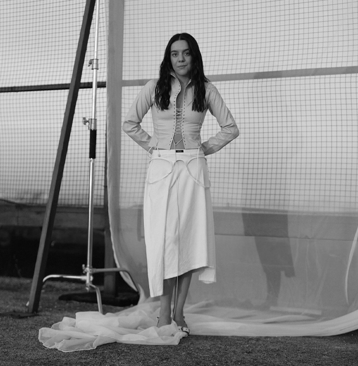

Cantautora · La Palma, Canarias
Valeria
Castro
Canciones que se acercan a las emociones y las experiencias personales.
Descubrir su historia
Sobre Valeria
Una voz de
La Palma
Valeria Castro es una cantautora de La Palma, Canarias. Su música aborda emociones y experiencias personales.
Origen
La Palma, Canarias
Colaboraciones
Julieta Venegas, Alejandro Sanz, Silvana Estrada y Vicente García.
Canciones, escenarios y reconocimientos
Trayectoria
- Discografía
- chiquita, con cariño y con cuidado y el cuerpo después de todo.
- Gira de su primer álbum
- Reunió 82 conciertos en más de diez países, según su biografía oficial.
- 2025
- Publicó su segundo álbum, el cuerpo después de todo, producido por Carles Campi Campón y grabado entre México y España.
- Reconocimientos
- Nominaciones al Latin Grammy y al Goya, y reconocimiento a Mejor Álbum de Raíz en los Premios MIN.
En directo
Próximas
presentaciones
Agenda consultada el 13 de octubre de 2026
- DublínWhelan’s ↗
- LondresThe Garage ↗
- ParísCafé de la Danse
- BruselasLe Botanique
- BarcelonaPalau Sant Jordi ↗